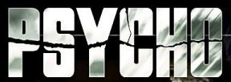
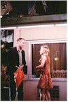
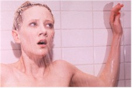
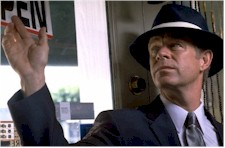

Contents | Features | Reviews | News | Archives | Store |
 |
|
| Movie Credits | Buy It! |
Psycho
Review by Sean Axmaker
Posted 4 December 1998
|  | Directed by Gus Van Sant Starring
Vince Vaughn, Julianne Moore, Written by Robert Bloch and Joseph Stefano |
Every time a classic film gets remade, the chorus of naysayers chimes in with the obligatory: "What’s the point of remaking it, especially when they change so much?" The main point, of course, is money. Hollywood is constantly in need of marketable stories, and if something worked once in a film, the reasoning goes it’ll work again… with just a few adjustments. The other factor, often enough, is a filmmaker’s reverence for a particular film: Mel Brooks’ remake (as producer) of To Be Or Not To Be (which, indeed, was a bad idea – the clumsy farceur putting his sloppy mitts on the Lubitsch touch) and Steven Spielberg’s Always (a remake of A Guy Named Joe) are two that come to mind.
Gus Van Sant’s Psycho joins the group and adds a twist – he changes hardly a thing. It makes for a fascinating premise, an inventive post-modern experiment in pop-culture authorship. He not only stuck to the script (with a few minor changes to bring it into the 1990s, courtesy of original scribe Joseph Stefano) and storyboards, but shooting schedule, timing, even (they claim) elements of marketing. That was their excuse for not previewing it for critics. I think there were other reasons.
Psycho 1998 is drenched in possibility through the first half, as Anne Heche (looking more birdlike than Janet Leigh in her helmet-short hairdo and darting eyes) carves her own Marion Crane out of the material. Heche’s performance is more nuanced and rich than Leigh’s and while she’s on the screen there’s a story, someone to care about. Vince Vaughan’s twitchy, troubled, pent-up Norman Bates, however, holds no such promise: from the outset he looks like a serial killer in the making with his overanxious friendliness and nervous titter. When he voices the line "A boy’s best friend is his mother," he seems as much trying to convince himself as Marion (a point he vividly brings home when he spies at Marion through the peephole – one of the more insightful additions which I won’t spoil for you if you haven’t heard yet). Ironically, the infamous shower scene – Van Sant’s moment to shine as mother goes ginsu all over Marion’s pretty little naked body – falls flat. Neither surprising nor scary, it’s more than cliché and less than riveting. Even with Hitchcock’s shot list and a visual record of the crime, Van Sant can’t come up with anything more than a wan tribute to the master, proving it takes more than a good storyboard to make a film work. From this point on the film loses whatever interest it had. The only interesting character is gone and Van Sant is playing connect- the-dots to a conclusion we all know is coming. There’s no suspense and there’s no creative tension between Hitchcock’s vision and Van Sant’s sensibilities.
Most of the rest of the cast are better performers than the originals they replace. Unpredictable Viggo Mortenson, a character actor whose range of roles have been so diverse he defies expectations, is far more convincing than pretty-boy hunk John Gavin as Marion’s boyfriend Sam, and Julianne Moore takes an interesting tack on Vera Miles’ role as Marion’s sister Lila, now a sloppy record store clerk with an ever-present walkman running tunes to her headset. Unfortunately they haven’t the screen time to create characters out of their parts and, apart from a few quirks, Van Sant hasn’t lavished the attention on them they need. William H. Macy, however, is entertaining as private eye Arbogast. Cajoling with a friendly smile, grilling with hard-boiled patter, he’s a movie PI that feels more at home in this bizarre universe than the other performers intently trying to bring their 1960 characterizations into the present with accoutrements and attitude. You’ll also spot Philip Baker Hall, James LeGros, James Remar, and Van Sant favorite Flea in small roles, and Robert Forster is saddled with Simon Oakland’s dead speech "explaining" Norman’s aberrations, still as thankless a part as ever.
Psycho is such an iconic, trendsetting, taboo-breaking piece of Hollywood history that Van Sant was destined to lose from the beginning, whether he changed anything or not. Easy enough to say in retrospect, sure, but Psycho draws its power not simply from its story, its images, or its screeching Bernard Herrmann score (adapted faithfully by Danny Elfman). Hitch was practically a brand name by the time he made Psycho, the droll host of a hugely successful TV series and the name of the title of some of Hollywood’s glossiest suspense dramas and romantic thrillers. Anthony Perkins was the boy next door, frail, sincere, anxious, and the last person to carve up the pretty girls who tweak his libido, and Janet Leigh a glamorous Hollywood starlet whose persona was always more important than her performances. This combination, combined with Hitch’s acumen and artistry, and the sheer shock of the subject matter and treatment from a movie showman, shattered expectations with conventions and started the horror-film revolution. With Psycho’s godchildren Night of the Living Dead, The Texas Chainsaw Massacre, The Silence of the Lambs, and Scream further breaking down conventions in the intervening years, how can a straight remake, no matter how faithful, hope to get under the skin of this shock-savvy generation?
Psycho 1998 isn’t completely devoid of interest. Hong-Kong based Christopher Doyle (Chungking Express, Temptress Moon), perhaps the most color sensitive cinematographer this side of Vittorio Storaro, brings a delicate and sometimes startling palette to Psycho, maintaining the mundane world in muted colors and then splashing the screen with suddenly saturated hues in moments of violence. Van Sant enriches the soundtrack with a subtle weave of sound effects, barely heard background music, and carefully controlled dialogue levels mixed masterfully with the rescored Herrmann music. Technically Psycho is masterful. So why does the film feel so flat?
The question comes up again: "What’s the point of remaking it?" Van Sant has given a number of reasons for it, few of which I believe ("Kids won’t watch B&W films, so this is one way to bring the film to them."… right) but he’s been hot to shoot this post-modern exercise for ten years. His true reasons can’t be flip or impulsive, but watching this production isn’t going to shed any light on them. He’s dug out a few ideas dormant in Hitchcock’s version and rather cleverly pulled them into film, and created an even more affecting Marion Crane, but as the film rushes to the inevitable it becomes clear that Van Sant has completely subsumed his personality in favor of Hitchcock’s vision. The result isn’t Hitch, isn’t Van Sant, isn’t modern, isn’t period, and ultimately isn’t really that exciting. Van Sant hasn’t the nuanced direction to match the master’s control of suspense, and doesn’t allow himself the idiosyncratic details that might bring something new, something unexpected to the film. It sounds silly, but as well as I know the original Psycho I get so caught up in the moment that it still shocks – I know what’s coming but it feels unexpected time after time. Van Sant misses Hitch’s tension, bobbles the suspense, and comes up with something more than a tribute and less than a movie. Van Sant, what is the phrase, isn’t himself in this film.
Contents | Features | Reviews | News | Archives | Store
Copyright © 1999 by Nitrate Productions, Inc. All Rights Reserved.